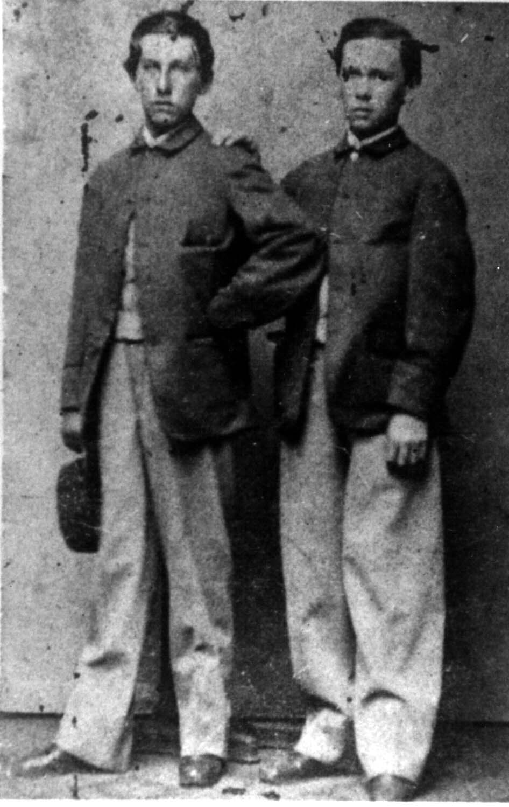

Here's a photograph of "John William Rudge" during the Civil War. It is unclear to me whether his uniform is that of a drummer during his days in the infantry, or perhaps what he wore when he was a cabin boy on a blockade runner. He appears on the left. A friend, named "George Weber", appears on the right. The caption to the original photograph reads "John William Rudge George Weber."